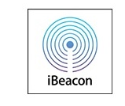

iBeacons

What is an iBeacon?
An iBeacon is a small Bluetooth device (Bluetooth Low Energy - BLE, Bluetooth 4.0) which sends out it's identification regularily. The iBeacon standard was introduced by Apple Inc. in 2013. It is supported by iOS. iBeacons can be purchased as standalone devices or to be used in connection with computer equipement.
If you position 3/4 iBeacons in a room, your 2/3-dimensional position can be calculated based on the signal strengths received.
What you can do with iBeacons in OwnTracks
This data is detected by your OwnTracks iOS device and can be used for region monitoring.
-
Use an iBeacon to get your exact location
Position an iBeacon in your study and get enter- and leave-events from that room. -
Use an iBeacon to connect yourself with a vehicle
Equip your car with an iBeacon and monitor how much time you spend commuting. Always see where you parked your car. -
Use an iBeacon to track a valuable accessory
Fit an iBeacon to your keys/luggage/expensive equipement and get alarmed when you leave them behind.
Full feature set is here.